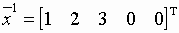

Симплекс-метод

Формализованный алгоритм симплекс метода состоит из двух основных этапов:
1. построение опорного плана;
2. построение оптимального плана.
Проиллюстрируем алгоритм на рассмотренном ранее примере:
.
.
В случае базисных переменных {x1, x2, x3}начальная симплексная таблица для данного примера будет выглядеть следующим образом:
|
|
-x4 |
-x5 |
1 |
|
x1= |
1 |
-2 |
1 |
|
x2= |
-2 |
1 |
2 |
|
x3= |
3 |
1 |
3 |
|
= |
-1 |
1 |
0 |
Она уже соответствует опорному плану  (столбец свободных членов).
Построение оптимального плана.
Для того чтобы опорный план был оптимален, при минимизации целевой функции необходимо, чтобы коэффициенты в строке целевой функции были неположительными (в случае максимизации – неотрицательными). Т.е. при поиске минимума мы должны освободиться от положительных коэффициентов в строке .
Выбор разрешающего элемента. Если при поиске минимума в строке целевой функции есть коэффициенты больше нуля, то выбираем столбец с положительным коэффициентом в строке целевой функции в качестве разрешающего. Пусть это столбец с номером l.
Для выбора разрешающей строки (разрешающего элемента) среди положительных коэффициентов разрешающего столбца выбираем тот (строку), для которого отношение коэффициента в столбце свободных членов к коэффициенту в разрешающем столбце минимально:
.
arl – разрешающий (направляющий) элемент, строка r – разрешающая.
Для перехода к следующей симплексной таблице (следующему опорному плану с меньшим значением целевой функции) делается шаг модифицированного жорданова исключения с разрешающим элементом arl.
Если в разрешающем столбце нет положительных коэффициентов, то целевая функция неограничена снизу (при максимизации – неограничена сверху).
Шаг модифицированного жорданова исключения над симплексной таблицей. На месте разрешающего элемента ставится 1 и делится на разрешающий элемент.
Остальные элементы разрешающего столбца меняют знак на противоположный и делятся на разрешающий элемент.
Остальные элементы разрешающей строки делятся на разрешающий элемент.
Все остальные элементы симплексной таблицы вычисляются по следующей формуле: .
|
|
|
Построение опорного плана.
Пусть необходимо решить задачу:
.
Введем дополнительные переменные, чтобы преобразовать ограничения-неравенства к равенствам. В ограничениях-равенствах дополнительные переменные должны быть нулевыми. Тогда система ограничений принимает вид:
,
где xn + i ≥ 0, i = 1, ..., p.
В качестве базисных переменных будем брать систему дополнительно введенных переменных. Тогда симплексная таблица для преобразованной задачи будет иметь следующий вид:
|
|
-x1 |
-x2 |
…. |
-xs |
.… |
-xn |
1 |
|
0 |
a1,1 |
a1,2 |
…. |
a1,s |
…. |
a1,n |
b1 |
|
…. |
…. |
…. |
…. |
…. |
…. |
…. |
…. |
|
0 |
am,1 |
am,2 |
…. |
am,s |
…. |
am,n |
bm |
|
xm+1 |
am+1,1 |
am+1,2 |
…. |
am+1,s |
…. |
am+1,n |
bm+1 |
|
…. |
…. |
…. |
…. |
…. |
…. |
…. |
…. |
|
xm+p |
am+p,1 |
am+p,2 |
…. |
am+p,s |
…. |
am+p,n |
bm+p |
|
|
-c1 |
-c2 |
…. |
-cs |
…. |
-cn |
0 |
Правила выбора разрешающего элемента при поиске опорного плана.
1. При условии отсутствия "0-строк" (ограничений-равенств) и "свободных" переменных (т.е. переменных, на которые не наложено требование неотрицательности).
o Если в столбце свободных членов симплексной таблицы нет отрицательных элементов, то опорный план найден.
o Есть отрицательные элементы в столбце свободных членов, например bi < 0. В такой строке ищем отрицательный коэффициент ail, и этим самым определяем разрешающий столбец l. Если не найдем отрицательный ail, то система ограничений несовместна (противоречива).
o В качестве разрешающей выбираем строку, которой соответствует минимальное отношение: , где r - номер разрешающей строки. Таким образом, arl - разрешающий элемент.
o После того, как разрешающий элемент найден, делаем шаг модифицированного жорданова исключения с направляющим элементом arl и переходим к следующей симплексной таблице.
2. В случае присутствия ограничений-равенств и "свободных" переменных поступают следующим образом.
o Выбирают разрешающий элемент в "0-строке" и делают шаг модифицированного жорданова исключения, после чего вычеркивают этот разрешающий столбец. Данную последовательность действий продолжают до тех пор, пока в симплексной таблице остается хотя бы одна "0-строка" (при этом таблица сокращается).
o Если же присутствуют и свободные переменные, то необходимо данные переменные сделать базисными. И после того, как свободная переменная станет базисной, в процессе определения разрешающего элемента при поиске опорного и оптимального планов данная строка не учитывается (но преобразуется).
Вагенгейм Александр, ИСС-11